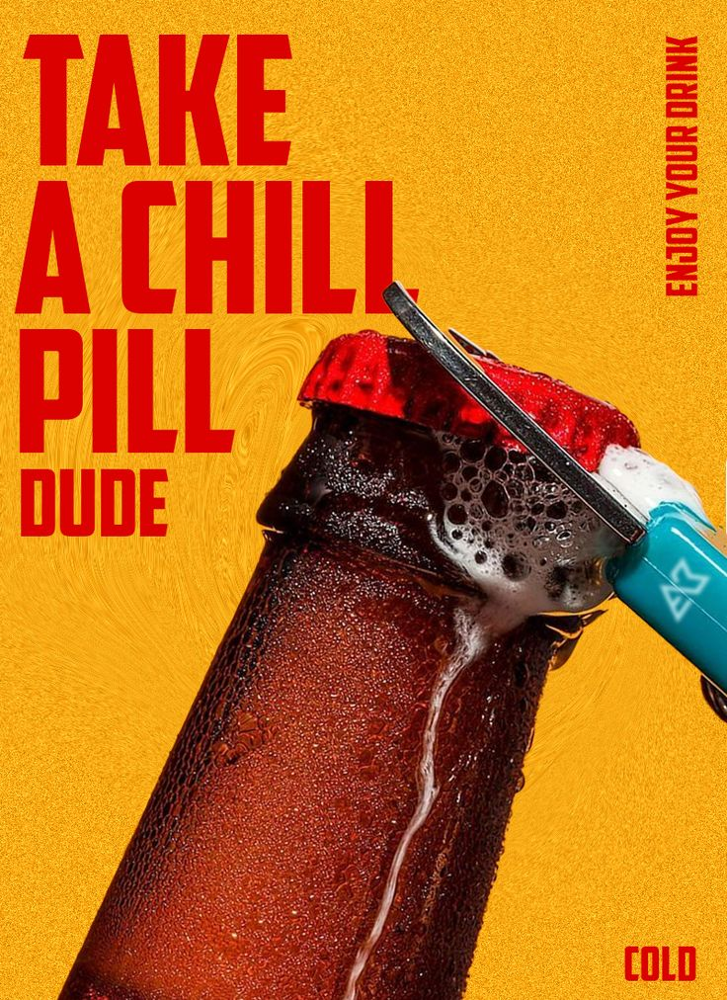

05
Brand Imagery Guide
Imagery should feel like a secret you descended into — dark, intimate and romantic, with one warm light doing all the work. The mood: a tribe hiding out in the cave, away from the bright corporate surface.
Style — Do
- Dark, low-key photography with a single warm light piercing the shadow.
- Grainy 35mm / analog film aesthetic — honest, tactile, never clinical.
- Macro texture: raw ore, stone coasters, mineral veins, wet glass.
- Candid, close, intimate human moments — couples, small tribes in the dark.
- Deep negative space and the widely-spaced wordmark for "high design" calm.
Style — Don't
- Bright, even, "premium cocktail lounge" or daylight lighting.
- Staged lifestyle stock photography or fake smiles.
- Over-saturated neon party clichés or rainbow club lighting.
- Glossy, plastic, over-polished, digital-feeling surfaces.
- Clip-art icons or busy layouts that crowd out the breathing room.
Cave Black
Oxide & Molten
Raw Stone & Bone





Emotion to evoke: the feeling of descending out of the bright, plastic, over-digitised city into something dark, permanent and real — then finding your people there. Mysterious but warm, raw but designed. If an image looks like a glossy ad, it's wrong. If it feels like a single beam of light catching a moment inside a cave, it's right.